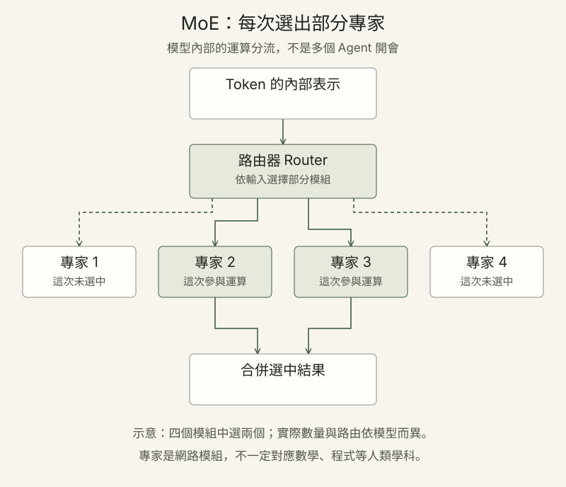

MoE 混合專家：模型如何分配運算？
MoE（Mixture of Experts）在部分網路層中，讓不同輸入片段使用不同的專家模組。
可以把路由器想成分流機制：它依照每個 Token 的內部表示，選擇一部分專家參與運算，再把結果交給後續網路處理。

- 輸入片段Token 的內部表示進入模型
- 路由選擇選出參與運算的專家
- 專家處理選中的模組進行計算
- 合併結果送往後續網路
稠密架構 Dense
同一層的輸入通常經過同一組運算模組；處理路徑相對固定。
混合專家 MoE
在 MoE 層，路由器為不同 Token 選擇部分專家；模型也有共用元件。
總參數與啟用參數：總參數是整個模型的規模；啟用參數描述處理單一 Token 時所使用的部分參數。啟用較少參數不代表只需載入這些參數，速度與成本也受硬體、通訊和部署方式影響。
「數學專家」或「程式專家」可作為比喻；實際專家是訓練得到的網路模組，不一定對應明確的人類學科。